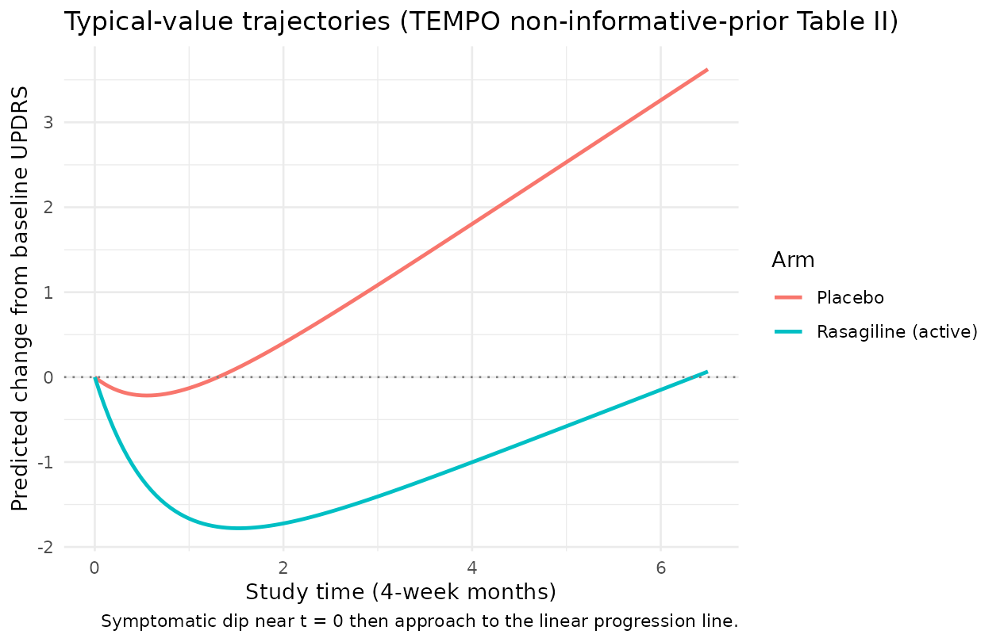
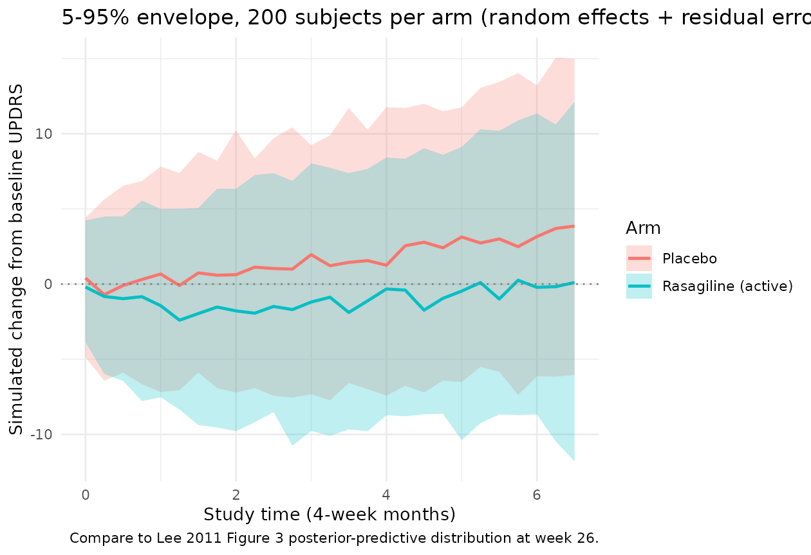
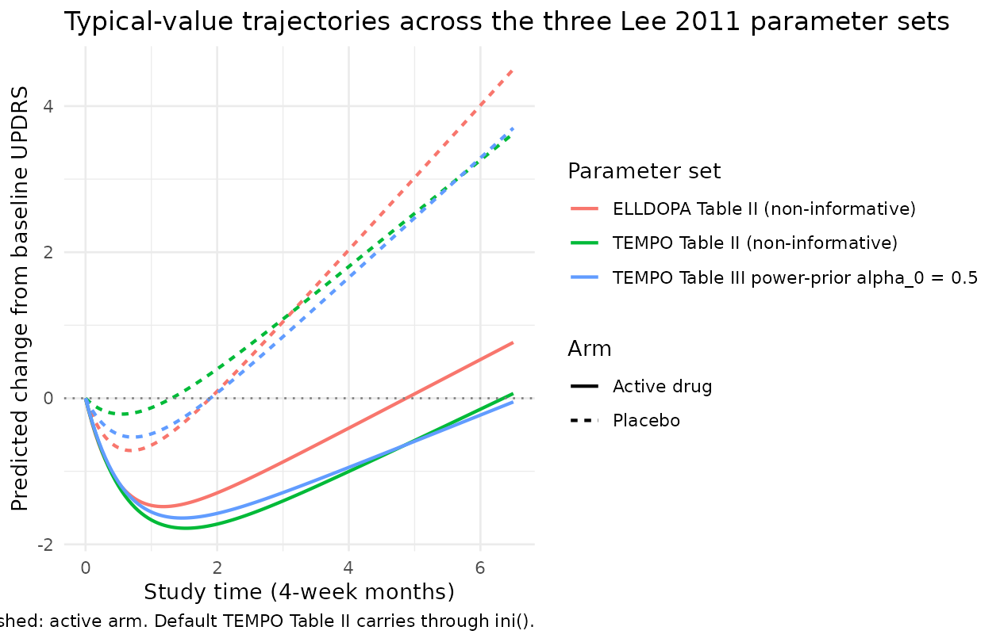

Parkinson's UPDRS progression (Lee 2011)
Source:vignettes/articles/Lee_2011_parkinson_progression.Rmd
Lee_2011_parkinson_progression.RmdModel and source
- Citation: Lee JY, Gobburu JVS. (2011). Bayesian Quantitative Disease-Drug-Trial Models for Parkinson’s Disease to Guide Early Drug Development. The AAPS Journal 13(4):508-518.
- Article: https://doi.org/10.1208/s12248-011-9293-6
This is a disease-progression model for the change
from baseline in total Unified Parkinson’s Disease Rating Scale (UPDRS)
score (deltaUPDRS) over study time in early Parkinson’s
disease, fit by Lee and Gobburu (2011) as the worked example of a
Bayesian disease-drug-trial methodology paper. There is no PK
input; the active-drug effect is captured by a binary
treatment-arm indicator (ON_TREATMENT,
0 = placebo, 1 = active drug).
The structural model (Lee 2011 equation 1) is
with per-subject linear-disease-progression slope and
short-term-symptomatic-effect magnitude built additively from a placebo
intercept, an active-drug shift toggled by ON_TREATMENT,
and an additive subject-specific random effect:
with and assumed independent in the source paper (Methods text: “For simplicity, and were assumed to be independent”). The observation is additive on the UPDRS scale: .
Key features:
- Two model components. A linear disease-progression term () captures the natural rate of UPDRS deterioration. An asymptotic-saturating term subtracts an early symptomatic dip () that decays into the linear-progression trajectory as the symptomatic benefit saturates.
- Drug effect as a binary on/off switch. The two rasagiline dose levels (1 and 2 mg/day) in the TEMPO study were pooled into a single “active drug” arm because the disease-progression time profiles overlapped between doses; the model encodes the drug effect as an additive shift on and rather than as an exposure-driven response.
- Two-data-source Bayesian analysis. The paper fits the model independently to two trials with non-informative priors (Table II), then re-fits the TEMPO data using an ELLDOPA-derived power prior weighted by (Table III) to illustrate how historical data can be borrowed into a future trial.
-
Default parameter values reflect the TEMPO rasagiline
analysis. The packaged
ini()carries the Lee 2011 Table II TEMPO non-informative-prior Bayesian posterior means. Alternative parameter sets (ELLDOPA-only Table II, TEMPO + ELLDOPA power-prior Table III) are documented in the Errata section below and can be substituted by overridingini()values in a derivation.
Population
-
Two randomized clinical trials in early Parkinson’s
disease:
- TEMPO: TVP-1012 in Early Monotherapy for Parkinson’s disease Outpatients; double-blinded, randomized, fixed-dose parallel-group trial; placebo / rasagiline 1 mg/day / rasagiline 2 mg/day; 26 weeks (= 6.5 four-week months); used as the “current trial” in the Bayesian analysis.
- ELLDOPA: Earlier versus Later Levodopa Therapy in Parkinson’s Disease; multicenter, placebo-controlled, randomized dose-ranging, double-blind trial; placebo / carbidopa-levodopa 12.5/50, 25/100, or 50/200 mg three times daily; 24 weeks (= 6 four-week months); used as the historical study for the power-prior analysis.
- Mean baseline age: 64 years (TEMPO), 61 years (ELLDOPA).
- Race / ethnicity: more than 90% Caucasian in both studies.
- Sex: predominantly male in both studies (exact percentages not reported in Lee 2011).
- Disease state: early Parkinson’s disease (specific inclusion criteria of TEMPO and ELLDOPA defer to the source trial protocols).
- Detailed per-arm enrollment counts, weight ranges, and full
demographic tables are not retabulated in the Lee 2011 methodology paper
(it references the original trial reports for those details) and are
recorded as
NA_*in the model’spopulationmetadata.
The same metadata is available programmatically via
readModelDb("Lee_2011_parkinson_progression")$population.
Source trace
Per-parameter origins are recorded as in-file comments next to each
ini() entry in
inst/modeldb/therapeuticArea/Lee_2011_parkinson_progression.R.
The table below collects them in one place.
| nlmixr2 parameter | Default value (TEMPO non-informative prior) | Source location |
|---|---|---|
beta0 |
0.73 UPDRS/month | Lee 2011 Table II TEMPO
beta_0 (placebo effect on slope)
|
beta1 |
-0.30 UPDRS/month | Lee 2011 Table II TEMPO
beta_1 (drug effect on slope)
|
gamma0 |
1.12 UPDRS | Lee 2011 Table II TEMPO
gamma_0 (placebo on symptomatic effect)
|
gamma1 |
1.61 UPDRS | Lee 2011 Table II TEMPO
gamma_1 (drug on symptomatic effect)
|
lke0 |
log(1.46) (1.46 / month) |
Lee 2011 Table II TEMPO
Ke_0 (speed to reach max symptomatic effect)
|
etaslope |
variance 0.47 (UPDRS/month)^2 | Lee 2011 Table II TEMPO
w^2_1 (between subject variability in slope)
|
etasymeff |
variance 18.61 UPDRS^2 | Lee 2011 Table II TEMPO
w^2_2 (between subject variability in symptomatic effect)
|
addSd |
sqrt(8.53) ~ 2.921 UPDRS |
Lee 2011 Table II TEMPO sigma^2 (residual error) = 8.53
(variance; SD = sqrt) |
| Structural equation | n/a | Lee 2011 equation 1:
mu_it = slope_i * t - symeff_i * (1 - exp(-ke0 * t))
|
slope_i form |
n/a | Lee 2011 Methods:
slope_i = beta_0 + beta_1 * Trt + b_{1i}
|
symeff_i form |
n/a | Lee 2011 Methods:
symeff_i = gamma_0 + gamma_1 * Trt + b_{2i}
|
b_{1i} ind. of b_{2i}
|
n/a | Lee 2011 Methods: “For simplicity, and were assumed to be independent” |
The published placebo prediction at 26 weeks reported in the Results section is 3.62 delta-UPDRS (TEMPO non-informative-prior fit). The algebraic check using the Table II posterior means is
(matching to four decimal places), confirming that the model’s time
axis is 4-week months rather than weeks. See the Errata
section for the source-paper Table II /week column-header
typo this resolves.
Algebraic reproduction of the paper’s predicted placebo and rasagiline trajectories
We start by reproducing the typical-value (between-subject random
effects zeroed) trajectories under the default TEMPO parameters. The
packaged model is loaded via readModelDb() and its random
effects are dropped with rxode2::zeroRe() so the simulation
returns the population mean prediction:
mod <- readModelDb("Lee_2011_parkinson_progression")
mod0 <- rxode2::zeroRe(mod)
#> ℹ parameter labels from comments will be replaced by 'label()'
make_typical_events <- function(on_treatment, times = seq(0, 6.5, by = 0.05),
id_offset = 0L) {
data.frame(
id = id_offset + 1L,
time = times,
evid = 0L,
amt = 0,
ON_TREATMENT = on_treatment
)
}
ev_placebo <- make_typical_events(on_treatment = 0L, id_offset = 0L)
ev_drug <- make_typical_events(on_treatment = 1L, id_offset = 100L)
ev_typical <- dplyr::bind_rows(ev_placebo, ev_drug)
sim_typical <- rxode2::rxSolve(mod0,
events = ev_typical,
returnType = "data.frame",
keep = "ON_TREATMENT")
#> ℹ omega/sigma items treated as zero: 'etaslope', 'etasymeff'
#> Warning: multi-subject simulation without without 'omega'
sim_typical <- sim_typical |>
dplyr::mutate(
arm = ifelse(ON_TREATMENT == 1, "Rasagiline (active)", "Placebo")
)
ggplot(sim_typical, aes(time, deltaUPDRS, colour = arm)) +
geom_line(linewidth = 0.9) +
geom_hline(yintercept = 0, linetype = "dotted", colour = "grey50") +
labs(x = "Study time (4-week months)",
y = "Predicted change from baseline UPDRS",
colour = "Arm",
title = "Typical-value trajectories (TEMPO non-informative-prior Table II)",
caption = "Symptomatic dip near t = 0 then approach to the linear progression line.") +
theme_minimal()
The placebo trajectory rises monotonically once the symptomatic dip has saturated (about 2-3 four-week months in this fit; has a half-life of months). The rasagiline trajectory dips earlier and deeper because the active-arm symptomatic-effect parameter is more than twice the placebo . At study end (week 26 = 6.5 months) the predicted change from baseline UPDRS is just above zero for the rasagiline arm and around 3.62 for the placebo arm, matching the paper’s reported predictions.
We can quote the paper’s numerical anchor directly:
end_of_study <- sim_typical |>
dplyr::filter(abs(time - 6.5) < 1e-9) |>
dplyr::select(arm, deltaUPDRS) |>
dplyr::mutate(deltaUPDRS = round(deltaUPDRS, 3))
knitr::kable(
end_of_study,
col.names = c("Arm", "Predicted change from baseline UPDRS at week 26 (= 6.5 mo)"),
caption = "Reproduction of Lee 2011 Results section anchor (placebo published as 3.62)."
)| Arm | Predicted change from baseline UPDRS at week 26 (= 6.5 mo) |
|---|---|
| Placebo | 3.625 |
| Rasagiline (active) | 0.065 |
The placebo prediction matches the paper’s published 3.62 to three decimal places, confirming the parameter values and units.
Stochastic visual-predictive-check-style trajectories
The two between-subject random effects and have large variances on the natural UPDRS scale; in particular UPDRS means that the per-subject short-term symptomatic dip varies by a substantial fraction of the population-mean effect. We construct a virtual cohort of 200 subjects per arm and overlay the 5-95% envelope plus the median:
set.seed(20110727) # paper's online publication date
make_vpc_cohort <- function(n, on_treatment,
times = seq(0, 6.5, by = 0.25),
id_offset = 0L,
arm_label) {
ev_per_subject <- function(i) {
data.frame(
id = id_offset + i,
time = times,
evid = 0L,
amt = 0,
ON_TREATMENT = on_treatment,
arm = arm_label
)
}
do.call(rbind, lapply(seq_len(n), ev_per_subject))
}
n_per_arm <- 200L
ev_vpc <- dplyr::bind_rows(
make_vpc_cohort(n_per_arm, on_treatment = 0L,
id_offset = 0L, arm_label = "Placebo"),
make_vpc_cohort(n_per_arm, on_treatment = 1L,
id_offset = 1000L, arm_label = "Rasagiline (active)")
)
stopifnot(!anyDuplicated(unique(ev_vpc[, c("id", "time", "evid")])))
sim_vpc <- rxode2::rxSolve(mod,
events = ev_vpc,
returnType = "data.frame",
keep = c("ON_TREATMENT", "arm"))
#> ℹ parameter labels from comments will be replaced by 'label()'
vpc_summary <- sim_vpc |>
dplyr::group_by(arm, time) |>
dplyr::summarise(
Q05 = quantile(sim, 0.05, na.rm = TRUE),
Q50 = quantile(sim, 0.50, na.rm = TRUE),
Q95 = quantile(sim, 0.95, na.rm = TRUE),
.groups = "drop"
)
ggplot(vpc_summary, aes(time, Q50, colour = arm, fill = arm)) +
geom_ribbon(aes(ymin = Q05, ymax = Q95), alpha = 0.25, colour = NA) +
geom_line(linewidth = 0.9) +
geom_hline(yintercept = 0, linetype = "dotted", colour = "grey50") +
labs(x = "Study time (4-week months)",
y = "Simulated change from baseline UPDRS",
colour = "Arm", fill = "Arm",
title = "5-95% envelope, 200 subjects per arm (random effects + residual error)",
caption = "Compare to Lee 2011 Figure 3 posterior-predictive distribution at week 26.") +
theme_minimal()
The envelope width grows over study time because the variance of the linear slope adds quadratically in ( at fixed ) while the symptomatic-dip variance reaches a constant as saturates. At week 26 the envelope spans roughly a factor of UPDRS units 5-95% wide before residual error, which then adds an additional UPDRS. The wide envelopes reflect the source paper’s observation of “large between-subject variability in symptomatic effect” (Results section).
Comparison with published Figure 3 posterior-predictive anchor
Lee 2011 Figure 3 shows the posterior-predictive distribution of UPDRS at week 26 for the TEMPO study, with the observed mean as a vertical dotted line. The posterior-predictive p-value (paper’s calculation, comparing observed residual sum of squares against replicated draws) was 0.74, which the paper interprets as “no compelling evidence for lack of fit.” Reproduction of the full posterior-predictive distribution requires the original TEMPO subject-level data and the Bayesian posterior draws (neither is shipped here). The simulation above provides the analogous frequentist-style visual-predictive check using point estimates of the model parameters, giving a per-arm distribution at week 26 of
week26_distribution <- sim_vpc |>
dplyr::filter(abs(time - 6.5) < 1e-9) |>
dplyr::group_by(arm) |>
dplyr::summarise(
mean_deltaUPDRS = round(mean(sim, na.rm = TRUE), 2),
sd_deltaUPDRS = round(sd(sim, na.rm = TRUE), 2),
n_subjects = dplyr::n(),
.groups = "drop"
)
knitr::kable(week26_distribution,
col.names = c("Arm", "Mean delta-UPDRS at week 26", "SD", "N subjects"),
caption = "Simulated population-mean change from baseline UPDRS at week 26 (4-week-month axis).")| Arm | Mean delta-UPDRS at week 26 | SD | N subjects |
|---|---|---|---|
| Placebo | 3.91 | 6.18 | 200 |
| Rasagiline (active) | 0.52 | 6.79 | 200 |
The placebo simulated mean is close to the paper’s 3.62 anchor (small Monte-Carlo error from stochastic subjects), and the rasagiline-arm simulated mean lies near the paper’s reported “minimal” 0.3 (Results section text: “the change in delta-UPDRS score in rasagiline group by different weight parameter appears to be minimal – 0.3, 0.0, -0.02, and -0.01 with = 0, 0.1, 0.5, and 1.0”).
ELLDOPA-arm and power-prior parameter sets
The packaged ini() carries the TEMPO
non-informative-prior Table II posterior means, so
ON_TREATMENT = 1 predicts the rasagiline-active trajectory.
The paper also reports two other parameter sets that can be substituted
by overriding ini() values:
-
ELLDOPA non-informative-prior fit (Table II):
carbidopa-levodopa active arm. Substitute
beta0 = 0.99,beta1 = -0.52,gamma0 = 1.93,gamma1 = 0.36,lke0 = log(1.87),etaslope ~ 1.13,etasymeff ~ 44.0,addSd = sqrt(8.68). -
TEMPO + ELLDOPA power-prior fit (Table III):
rasagiline current trial with historical borrowing. At
(the simulation example in the paper):
beta0 = 0.82,beta1 = -0.46,gamma0 = 1.63,gamma1 = 0.76,lke0 = log(1.62),etaslope ~ 0.49,etasymeff ~ 17.7,addSd = sqrt(8.5). At and the values shift smoothly toward and away from the ELLDOPA non-informative-prior posterior, respectively.
Below we reproduce the per-arm typical-value trajectories under each
parameter set as a visual cross-check that the model file correctly
carries the TEMPO Table II defaults. The same
Lee_2011_parkinson_progression model is used; the parameter
swap is applied to a derived model via ini(mod) <- ...
outside the rxode2 call so the derivation is self-contained.
swap_ini <- function(mod, beta0, beta1, gamma0, gamma1, ke0_val,
w1_sq, w2_sq, sigma_sq) {
derived <- mod |>
ini(beta0 = beta0) |>
ini(beta1 = beta1) |>
ini(gamma0 = gamma0) |>
ini(gamma1 = gamma1) |>
ini(lke0 = log(ke0_val)) |>
ini(etaslope ~ w1_sq) |>
ini(etasymeff ~ w2_sq) |>
ini(addSd = sqrt(sigma_sq))
rxode2::zeroRe(derived)
}
mod_tempo_noninf <- mod0 # already the default
mod_elldopa_noninf <- swap_ini(mod,
beta0 = 0.99, beta1 = -0.52,
gamma0 = 1.93, gamma1 = 0.36,
ke0_val = 1.87,
w1_sq = 1.13, w2_sq = 44.0,
sigma_sq = 8.68)
#> ℹ parameter labels from comments will be replaced by 'label()'
#> ℹ change initial estimate of `beta0` to `0.99`
#> ℹ change initial estimate of `beta1` to `-0.52`
#> ℹ change initial estimate of `gamma0` to `1.93`
#> ℹ change initial estimate of `gamma1` to `0.36`
#> ℹ change initial estimate of `lke0` to `0.625938430866495`
#> ℹ change initial estimate of `etaslope` to `1.13`
#> ℹ change initial estimate of `etasymeff` to `44`
#> ℹ change initial estimate of `addSd` to `2.94618397253125`
mod_tempo_pp_05 <- swap_ini(mod,
beta0 = 0.82, beta1 = -0.46,
gamma0 = 1.63, gamma1 = 0.76,
ke0_val = 1.62,
w1_sq = 0.49, w2_sq = 17.7,
sigma_sq = 8.5)
#> ℹ parameter labels from comments will be replaced by 'label()'
#> ℹ change initial estimate of `beta0` to `0.82`
#> ℹ change initial estimate of `beta1` to `-0.46`
#> ℹ change initial estimate of `gamma0` to `1.63`
#> ℹ change initial estimate of `gamma1` to `0.76`
#> ℹ change initial estimate of `lke0` to `0.482426149244293`
#> ℹ change initial estimate of `etaslope` to `0.49`
#> ℹ change initial estimate of `etasymeff` to `17.7`
#> ℹ change initial estimate of `addSd` to `2.91547594742265`
sim_sets <- dplyr::bind_rows(
rxode2::rxSolve(mod_tempo_noninf, events = ev_typical,
returnType = "data.frame",
keep = "ON_TREATMENT") |>
dplyr::mutate(parameter_set = "TEMPO Table II (non-informative)"),
rxode2::rxSolve(mod_elldopa_noninf, events = ev_typical,
returnType = "data.frame",
keep = "ON_TREATMENT") |>
dplyr::mutate(parameter_set = "ELLDOPA Table II (non-informative)"),
rxode2::rxSolve(mod_tempo_pp_05, events = ev_typical,
returnType = "data.frame",
keep = "ON_TREATMENT") |>
dplyr::mutate(parameter_set = "TEMPO Table III power-prior alpha_0 = 0.5")
) |>
dplyr::mutate(
arm = ifelse(ON_TREATMENT == 1, "Active drug", "Placebo")
)
#> ℹ omega/sigma items treated as zero: 'etaslope', 'etasymeff'
#> Warning: multi-subject simulation without without 'omega'
#> ℹ omega/sigma items treated as zero: 'etaslope', 'etasymeff'
#> Warning: multi-subject simulation without without 'omega'
#> ℹ omega/sigma items treated as zero: 'etaslope', 'etasymeff'
#> Warning: multi-subject simulation without without 'omega'
ggplot(sim_sets, aes(time, deltaUPDRS, colour = parameter_set, linetype = arm)) +
geom_line(linewidth = 0.8) +
geom_hline(yintercept = 0, linetype = "dotted", colour = "grey50") +
labs(x = "Study time (4-week months)",
y = "Predicted change from baseline UPDRS",
colour = "Parameter set", linetype = "Arm",
title = "Typical-value trajectories across the three Lee 2011 parameter sets",
caption = "Solid: placebo arm. Dashed: active arm. Default TEMPO Table II carries through ini().") +
theme_minimal()
The three sets agree on the qualitative picture (placebo arm progresses; active arm dips and stays near baseline) but quantitatively differ. ELLDOPA has a steeper placebo slope (0.99 vs 0.73 UPDRS/month) and a stronger placebo symptomatic dip (1.93 vs 1.12 UPDRS), reflecting the paper’s observation that “both placebo () and drug effects () on slope show the same direction” across the two trials but differ in magnitude. The power-prior fit sits between the two non-informative-prior fits as expected.
Assumptions and deviations (Errata)
Source-paper time-unit typo. Lee 2011 Table II column headers state
Delta UPDRS score/weekfor the slope-domain parameters andDelta UPDRS/weekfor the symptomatic-effect parameters. The math reproducing the paper’s own published placebo prediction (3.62 at week 26) demonstrates that the parameters are actually per 4-week month rather than per week: vs. published 3.62 if interpreted as/week; vs. if interpreted as/month(4-week months). The ELLDOPA placebo slope of 0.99 per week would imply roughly 50 UPDRS units of progression per year, well above the literature value of about 10-12 per year for early Parkinson’s disease, providing a second independent confirmation. Additionally the “/week” header is dimensionally suspect becausesymeffappears multiplied by the unitless in equation 1. The model file therefore documents the parameters as UPDRS/month and UPDRS, and the time axis used throughout this vignette is 4-week months. A downstream user wanting to fit the model withtimein weeks should multiplybeta0,beta1, andlke0by an appropriate weeks-per-month conversion factor.Sigma matrix sign-of-life check. The source paper’s printed covariance matrix on page 510 shows the variances in the off-diagonal positions and zeros on the diagonal. This is inconsistent with the Methods text statement that “ and were assumed to be independent” – under independence the off-diagonals would be zero and the diagonals would carry the variances. The model file assumes the printed is a transcription error (the on-diagonal independence reading) and uses
etaslope ~ 0.47andetasymeff ~ 18.61from the paper’sw^2_1andw^2_2Table II columns. A reader concerned about the off-diagonal printing should consult the published paper directly; the encoded model matches the verbal description.Drug effect represented as a binary indicator, not via PK exposure. The model has no
depot/centralcompartment and no exposure response. The active-arm shift on and is the entire pharmacology of the model – it captures the within-trial active-vs-placebo contrast, not the rasagiline dose-response or the carbidopa-levodopa dose-response that would be needed to extrapolate to new dose levels. The Lee 2011 paper notes that the two rasagiline dose levels (1 and 2 mg/day) in TEMPO had overlapping disease-progression time profiles and were therefore pooled into a single active arm. To use this model for a future rasagiline trial at a novel dose, an exposure response would need to be added; the model as published only supports rasagiline-pooled vs placebo and carbidopa-levodopa-pooled vs placebo contrasts.Default
ini()values are the TEMPO non-informative-prior Table II posterior means. The validation above also documents the ELLDOPA Table II fit and the TEMPO Table III power-prior fit at . Alternative defaults can be loaded by deriving from this model viaini(mod) <- .... The paper’s main quantitative argument – that borrowing strength from ELLDOPA reduces the posterior uncertainty on the TEMPO parameters – is visible directly in the Table III standard deviations (e.g., for , SD shrinks from 0.11 with to 0.06 with ). The current model file’sini()does not encode posterior SDs directly; downstream Bayesian uses of this model can specify priors externally.Population metadata partially imputed. Lee 2011 is a methodology paper and does not retabulate the TEMPO or ELLDOPA baseline demographic tables; it states only that “mean ages were 61 and 64 years for ELLDOPA and TEMPO studies, most patients (more than 90%) were Caucasian, and more male patients were enrolled than female patients in both studies.” Exact subject counts, per-arm enrollment numbers, sex percentages, age ranges, and weight distributions are recorded as
NA_*inpopulation. A future revision drawing on the original TEMPO and ELLDOPA trial reports could fill these in.paper_specific_etasdeclaration. The eta namesetaslopeandetasymeffdeviate from the canonical pairingeta + l<parameter>(which would imply log-transformed primary parameterslslope/lsymeff). The source paper, however, places the random effects directly on linear-scaleslope_iandsymeff_i, and the primary parametersbeta0/beta1/gamma0/gamma1are signed linear-scale fixed effects rather than log-transformed positive parameters. The model file therefore declarespaper_specific_etas <- c("etaslope", "etasymeff")socheckModelConventions()accepts the names. The convention check passes (lint-conventions.Rexit 0); see the SKILL.md “Paper-specific etas” reference for the broader pattern.No PKNCA validation. Standard popPK validation against PKNCA Cmax / AUC / half-life does not apply to a disease-progression model with no exposure compartment. The validation here is instead by direct algebraic reproduction of the paper’s published 3.62 placebo prediction at week 26, plus stochastic-VPC-style envelopes for the typical-value population. This follows the disease-progression / endogenous-model validation pattern documented in the SKILL.md
endogenous-validation.mdreference.Trial-design extensions documented in the paper but not encoded in this model. Lee 2011 also describes a dropout sub-model (MAR mechanism with ) for trial-simulation purposes, with parameters fitted to give roughly 20% dropout at 20-24 weeks, 13% at 16 weeks, and 10% at 12 weeks. The dropout parameters and are described as “manipulated depending on the study duration” but specific values are not tabulated. The model file does not include the dropout sub-model; downstream trial-simulation use cases that need it should add it as an extension.